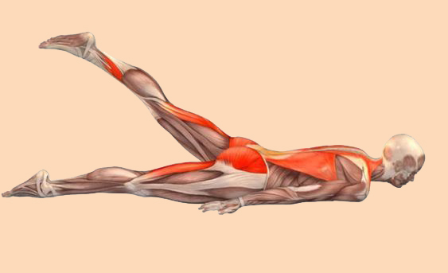

Mantener una salud muscular óptima es esencial para disfrutar de una vida activa y plena. El cuidado de los músculos no solo se trata de entrenamiento físico regular, sino también de una alimentación adecuada y un estilo de vida saludable. La nutrición desempeña un papel fundamental en el desarrollo y el mantenimiento de la masa muscular, así como en la prevención de lesiones. Algunos puntos clave a considerar son:
Proteínas: Las proteínas son esenciales para la reparación y el crecimiento muscular. Es importante incluir en la dieta, pollo, pescado, legumbres y productos lácteos bajos en grasa.
Carbohidratos: Los carbohidratos proporcionan la energía necesaria para los entrenamientos y la recuperación muscular. Opta por carbohidratos complejos como granos enteros, frutas y verduras.
Grasas saludables: Las grasas saludables, como las que se encuentran en el aceite de oliva y los frutos secos, son importantes para el funcionamiento óptimo de los músculos y la absorción de vitaminas esenciales.
Hidratación: Mantener una hidratación adecuada, ya que la deshidratación puede afectar negativamente el rendimiento muscular y aumentar el riesgo de lesiones.
Entrenamiento de fuerza: Incorporar ejercicios de fuerza es fundamental para fortalecer y tonificar los músculos. Esto puede incluir levantamiento de pesas, ejercicios de resistencia y ejercicios de peso corporal.
Flexibilidad: El estiramiento regular ayuda a mantener la movilidad y previene la rigidez muscular.
Descanso y recuperación: Es necesario recuperarse después del ejercicio. El descanso adecuado es crucial para la reparación y el crecimiento muscular.
Mantener un peso corporal saludable: Un peso adecuado reduce la tensión en los músculos y las articulaciones, lo que contribuye a una mejor salud muscular.

Imagen tomada de Pinterest